Première piste : Python
Un script crée un cube par pixel d'une image et l'étire selon sa luminance. Parfait sur de petites images, mais Blender sature au-delà de quelques milliers d'instances, alors qu'il en fallait environ 500 000.
← Projets · Projet personnel · 2014
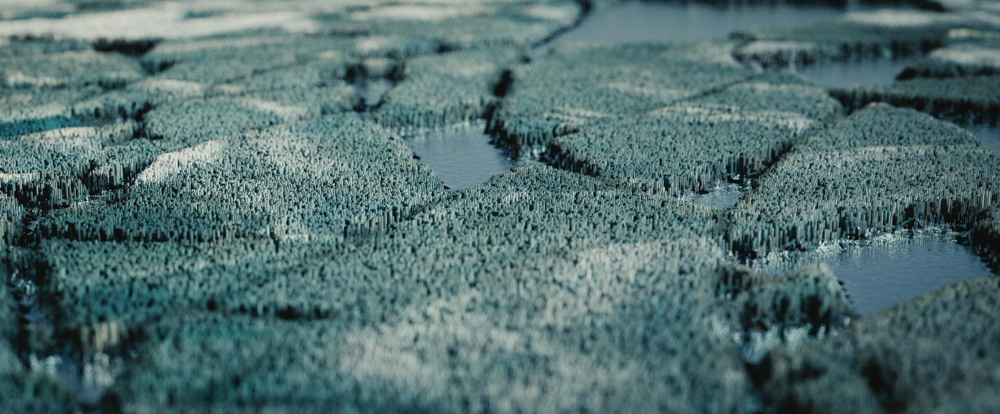
Une série de paysages abstraits faits uniquement de primitives simples, à la manière de Lee Griggs. Né d'un défi d'une journée pendant le Blender Month Challenge, le projet m'a occupé quelques jours de plus pour trouver la bonne technique.
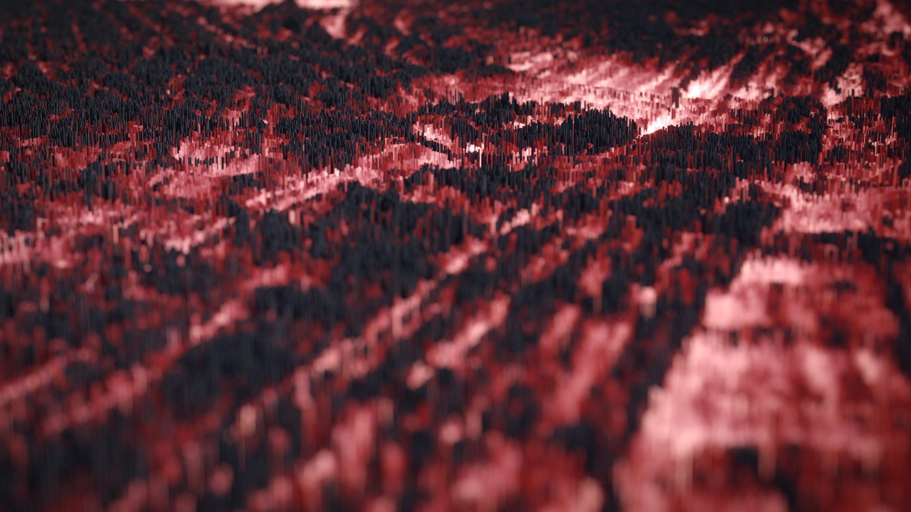
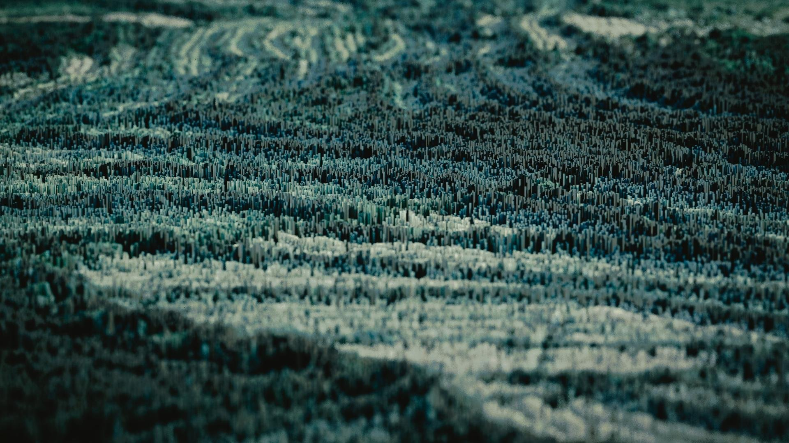
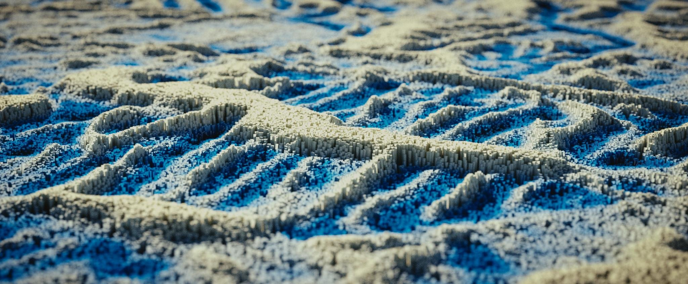
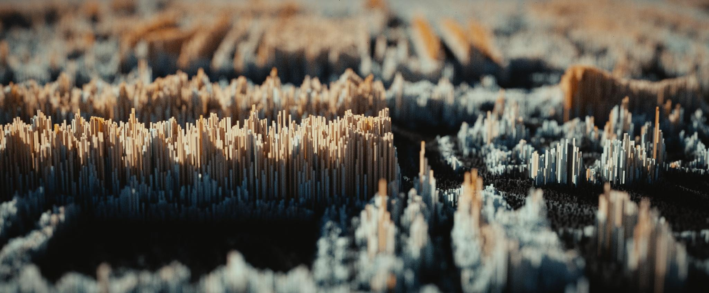
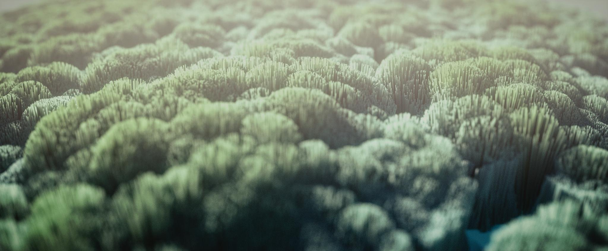
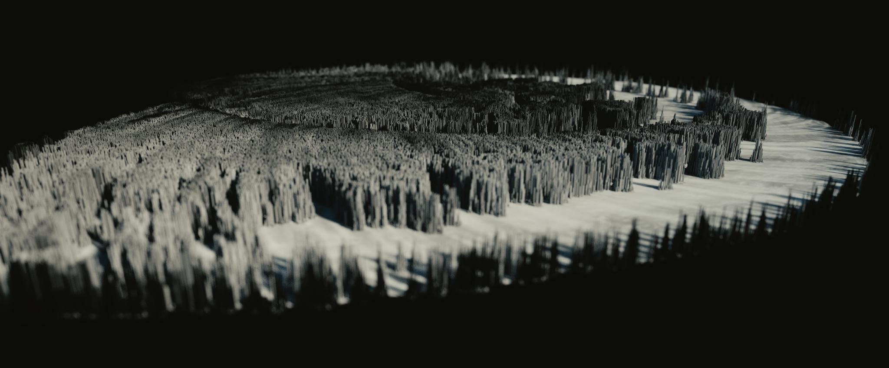
Technique
Le principe : des centaines de milliers de bâtonnets verticaux, dont la hauteur est dictée par une simple image. Tout l'enjeu était de trouver une méthode que Blender puisse encaisser.
Un script crée un cube par pixel d'une image et l'étire selon sa luminance. Parfait sur de petites images, mais Blender sature au-delà de quelques milliers d'instances, alors qu'il en fallait environ 500 000.
Un système de particules hair génère 600 000 brins verticaux, que Cycles rend comme de simples cylindres (primitives Line Segment, forme Thick). Le rendu de centaines de milliers de brins ne pose aucun problème.
Un modificateur VertexWeightEdit convertit une texture (ici, un gros plan de chou-fleur) en groupe de sommets, qui contrôle la longueur des particules. Un Displace sur la même texture déforme le sol.
La même texture, passée dans une color ramp, colore le paysage, avec un léger glossy et un peu de translucidité. Au compositing : glare discret, dégradé blanc pour l'atmosphère et vignettage.
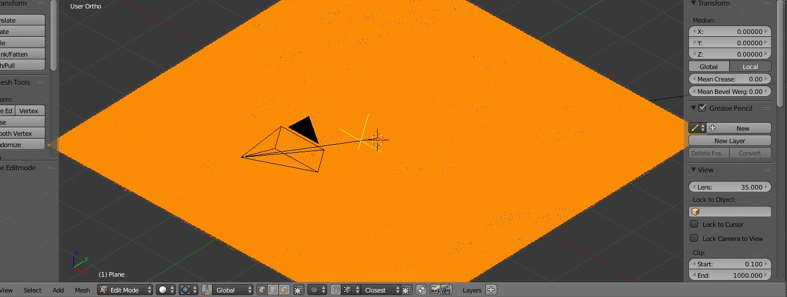
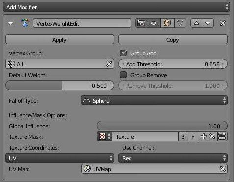
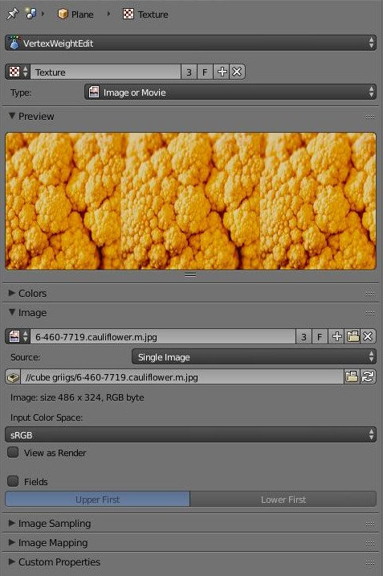
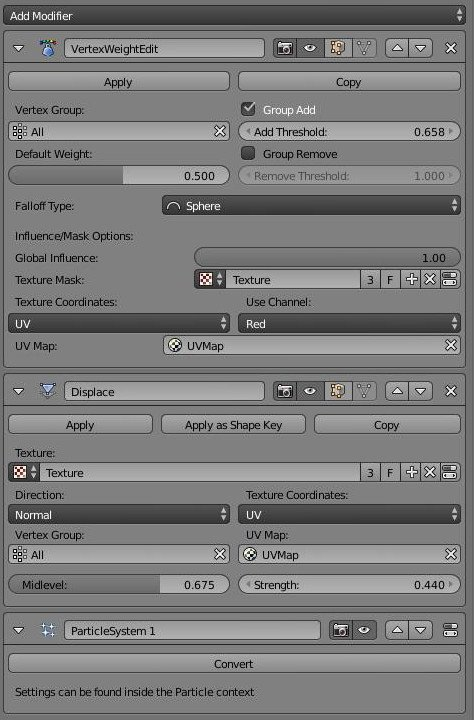
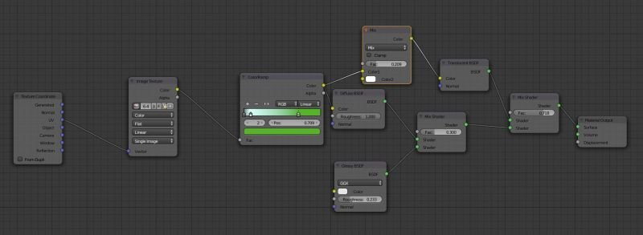
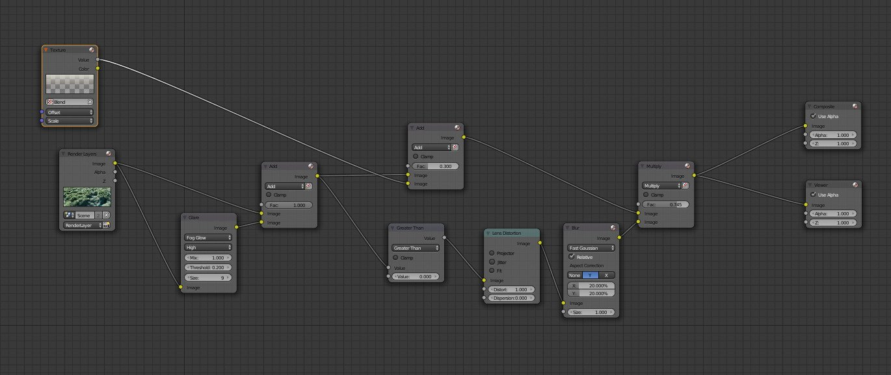